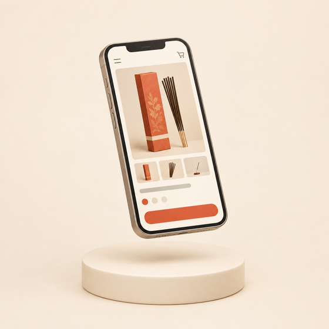
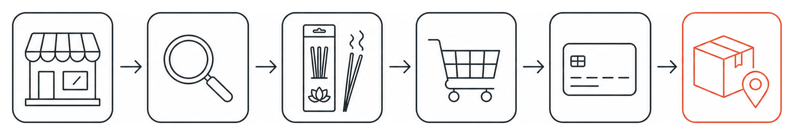
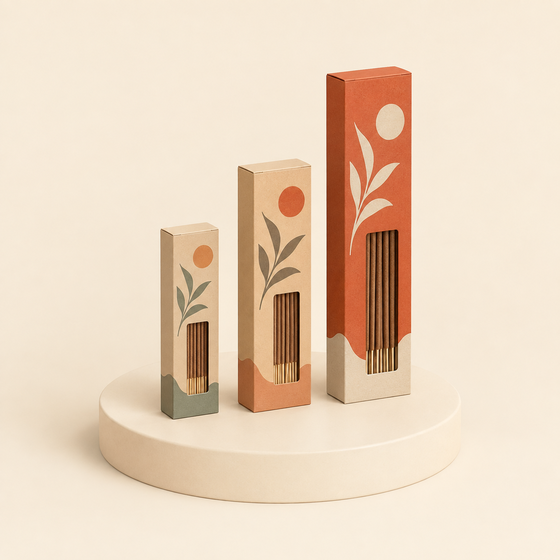
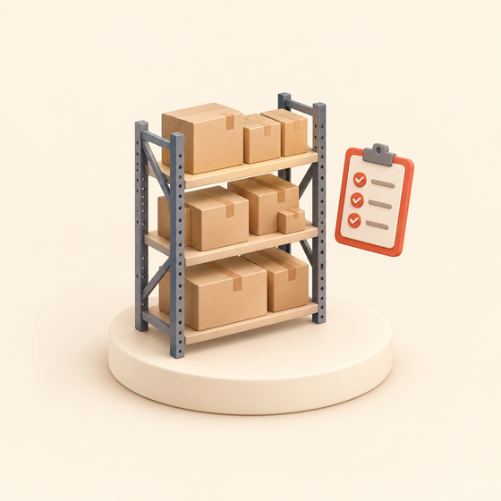

Today a browse ends on somebody else's checkout. Owned, it ends on yours.
Names, addresses and order history stay with the marketplace. Owned, they stay with you.
Pricing and promotion follow platform rules. Owned, you set them.
Reorder belongs to whoever holds the account. Owned, that is Darshan.


Search suggestions, fragrance and format filters, collections built around use and occasion rather than internal categories.

Clear pack size and format, honest price and availability, usage and safety guidance on the page where the decision happens.
Fast mobile checkout, transparent shipping and totals, confirmation and tracking the buyer can see without calling anyone.
| Discover | Product | Purchase | After purchase |
|---|---|---|---|
| Mobile first home Navigation Collections Campaign pages |
Gallery and zoom Variant choice Price and stock Product facts |
Cart Guest checkout Payment methods Shipping calculation |
Confirmation Shipment tracking Invoice access Support request |
| Predictive search Typo tolerance Fragrance filters Price filters |
Delivery estimate Usage guidance Related products Recently viewed |
Coupon rules Address validation COD controls Failed payment retry |
Customer account Saved addresses Order history Reorder |
Selling stock that is not there costs more than the order it wins.
Failed payments, cancellations and returns need somewhere to go, and somebody named.
Stock lives in one system. Every other view reads from it.

| Area | Launch capability | Management control |
|---|---|---|
| Catalogue | Bulk import, variants, collections, media and publish status | Validation, approval and change ownership |
| Inventory | Stock updates, low stock alert and oversell prevention | Named source of truth and reconciliation |
| Orders | Order view, invoice, cancellation, refund and internal notes | Exception queue, statuses and audit history |
| Payments | Payment capture, COD rules, refunds and failed payment recovery | Settlement and refund reconciliation |
| Shipping | Serviceability, rates, labels, manifest and tracking | Delivery and non delivery exception monitoring |
| Promotions | Coupons and automatic discount rules | Dates, limits, exclusions and approval |
| Users | Role based access and two factor authentication | Least privilege and access review |
| Reporting | Sales, orders, products, conversion and fulfilment | Daily operating dashboard and data ownership |
One customer story and shared content across the range.
Format, weight, pack and price. What a buyer picks.
Barcode, stock, tax and fulfilment data behind each variant.
| Identity | Customer content | Commerce data | Operations |
|---|---|---|---|
| Unique SKU Product family Product type Status |
Title Description Fragrance notes Usage and warnings |
MRP and price Variant values Images Related products |
Barcode Tax code Packed weight Stock source |
| Workstream | 1–2 | 3–4 | 5–6 | 7–8 | 9–10 | 11–12 | 13–14 | Duration |
|---|---|---|---|---|---|---|---|---|
| Discovery and blueprint | ● | Weeks 1 to 2 | ||||||
| Experience design | ● | ● | Weeks 2 to 4 | |||||
| Storefront and back office | ● | ● | ● | Weeks 4 to 8 | ||||
| Payments and shipping | ● | ● | ● | Weeks 6 to 9 | ||||
| Priority SKU onboarding | ● | ● | Weeks 7 to 10 | |||||
| Testing and training | ● | ● | Weeks 10 to 12 | |||||
| Launch and hypercare | ● | ● | Weeks 12 to 14 |
| Gate | Evidence required | Owner |
|---|---|---|
| Product | Priority assortment is complete, approved and purchasable | Darshan and implementation team |
| Commerce | Cart, checkout, payment, tax, shipping and refund tests pass | Implementation team |
| Operations | Order, fulfilment, exception and support procedures rehearsed | Darshan operations |
| Experience | Mobile journeys and major browsers pass acceptance testing | Joint |
| Security | Roles, access, backups and launch controls verified | Joint |
| Business | Policies, contacts, pricing and launch approval signed off | Darshan |
Two hundred fragrances across thirty countries. Nothing in this plan changes what you sell.
A buyer can find the product and then cannot buy it from you.
Every marketplace order teaches somebody else who your customer is.
| Discovery confirms | Output |
|---|---|
| Platform | Commerce platform, integrations and source of truth |
| Assortment | Approved SKU list, family structure and data gaps |
| Experience | Journeys, page set, filters and checkout requirements |
| Delivery plan | Final scope, milestones, risks and commercial estimate |